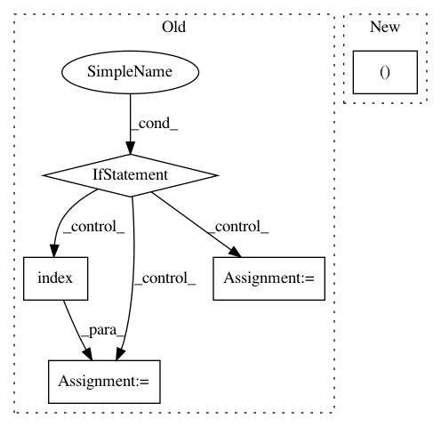

5d095f66fde8f10b45a93c0b35be0a85762b0458,debug_toolbar/panels/templates/panel.py,TemplatesPanel,_store_template_info,#TemplatesPanel#,81
Before Change
// If we can find this layer in our pseudo-cache then find the
// matching prettified version in the associated list.
key_values = sorted(context_layer.items())
if key_values in self.seen_layers:
index = self.seen_layers.index(key_values)
pformatted = self.pformat_layers[index]
else:
temp_layer = {}
for key, value in context_layer.items():
// Replace any request elements - they have a large
// unicode representation and the request data is
// already made available from the Request panel.
if isinstance(value, http.HttpRequest):
temp_layer[key] = "<<request>>"
// Replace the debugging sql_queries element. The SQL
// data is already made available from the SQL panel.
elif key == "sql_queries" and isinstance(value, list):
temp_layer[key] = "<<sql_queries>>"
// Replace LANGUAGES, which is available in i18n context
// processor
elif key == "LANGUAGES" and isinstance(value, tuple):
temp_layer[key] = "<<languages>>"
// QuerySet would trigger the database: user can run the
// query from SQL Panel
elif isinstance(value, (QuerySet, RawQuerySet)):
temp_layer[key] = "<<{} of {}>>".format(
value.__class__.__name__.lower(),
value.model._meta.label,
)
else:
recording(False)
try:
saferepr(value) // this MAY trigger a db query
except SQLQueryTriggered:
temp_layer[key] = "<<triggers database query>>"
except UnicodeEncodeError:
temp_layer[key] = "<<unicode encode error>>"
except Exception:
temp_layer[key] = "<<unhandled exception>>"
else:
temp_layer[key] = value
finally:
recording(True)
// Execute pformat first - if for some reason pformat/repr
// causes more templates to be rendered, seen/pformat layers
// will still be consistent
pformatted = pformat(temp_layer)
// Refs GitHub issue /묦
// If we"ve not seen the layer before then we will add it
// so that if we see it again we can skip formatting it.
self.seen_layers.append(key_values)
// Note: this *ought* to be len(...) - 1 but let"s be safe.
index = self.seen_layers.index(key_values)
// Note: this *ought* to be len(...) - 1 but let"s be safe.
self.pformat_layers.insert(index, pformatted)
context_list.append(pformatted)
kwargs["context"] = context_list
kwargs["context_processors"] = getattr(context, "context_processors", None)
After Change
finally:
recording(True)
pformatted = pformat(temp_layer)
self.pformat_layers.append((key_values, pformatted))
context_list.append(pformatted)
kwargs["context"] = context_list
In pattern: SUPERPATTERN
Frequency: 3
Non-data size: 5
Instances
Project Name: jazzband/django-debug-toolbar
Commit Name: 5d095f66fde8f10b45a93c0b35be0a85762b0458
Time: 2019-06-20
Author: jon.dufresne@gmail.com
File Name: debug_toolbar/panels/templates/panel.py
Class Name: TemplatesPanel
Method Name: _store_template_info
Project Name: daniel-kukiela/nmt-chatbot
Commit Name: 2a6a32e3ec6be921eef5d4bb4d905a9f22a309c0
Time: 2017-12-03
Author: daniel@kukiela.pl
File Name: inference.py
Class Name:
Method Name: inference
Project Name: snorkel-team/snorkel
Commit Name: 283ecdfd495c8d5256c5ab07b470f36270d7f4a8
Time: 2017-07-22
Author: ajratner@gmail.com
File Name: snorkel/learning/gen_learning.py
Class Name: GenerativeModel
Method Name: train